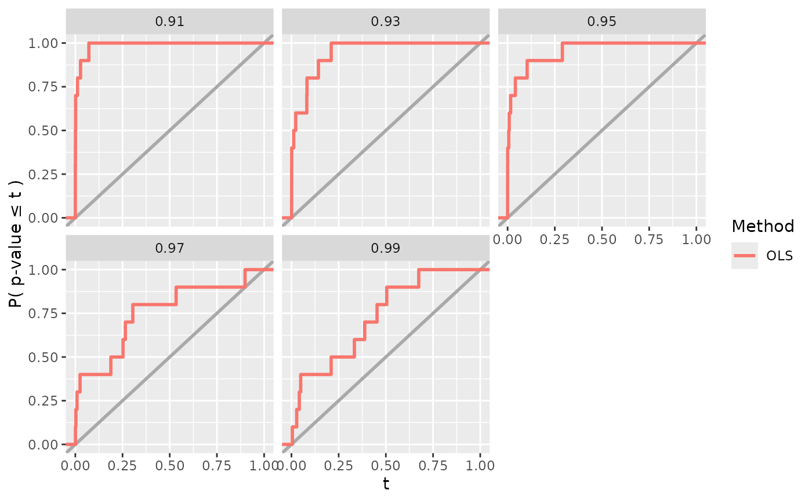
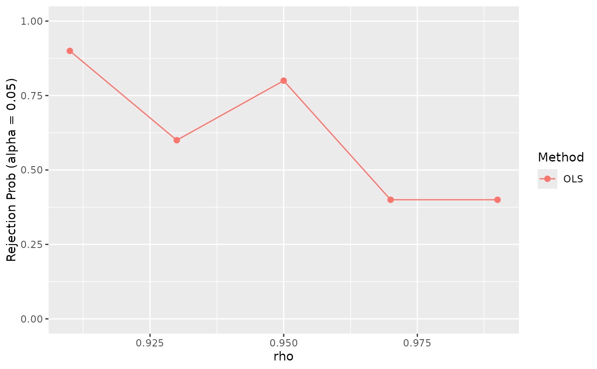

Create a Visualizer which can visualize() outputs and/or
evaluation metrics from Experiment runs.
Usage
create_visualizer(
.viz_fun,
.name = NULL,
.doc_options = list(),
.doc_show = TRUE,
...
)Arguments
- .viz_fun
The user-defined visualization function.
- .name
(Optional) The name of the
Visualizer.- .doc_options
(Optional) List of options to control the aesthetics of the
Visualizer's visualization in the knitted R Markdown report. Currently, possible options are "height" and "width" (in inches). The argument must be specified by position or typed out in whole; no partial matching is allowed for this argument.- .doc_show
If
TRUE(default), show the resulting visualization in the R Markdown report; ifFALSE, hide output in the R Markdown report.- ...
User-defined default arguments to pass into
.viz_fun().
Value
A new Visualizer object.
Details
When visualizing or running the Experiment (see
visualize_experiment() and run_experiment()), the named arguments
fit_results, eval_results, and vary_params are automatically passed
into the Visualizer function .viz_fun() and serve as placeholders for
the fit_experiment() results, the evaluate_experiment() results, and
the name of the varying parameter(s), respectively.
To visualize the performance of a method's fit and/or its evaluation
metrics then, the Visualizer function .viz_fun() should take in the
named arguments fit_results and/or eval_results. See fit_experiment()
for details on the format of fit_results. See evaluate_experiment() for
details on the format of eval_results. If the Visualizer is used within
an Experiment with varying parameters, vary_params should be used as a
stand in for the name of this varying parameter(s).
Examples
# create DGP
dgp_fun <- function(n, beta, rho, sigma) {
cov_mat <- matrix(c(1, rho, rho, 1), byrow = TRUE, nrow = 2, ncol = 2)
X <- MASS::mvrnorm(n = n, mu = rep(0, 2), Sigma = cov_mat)
y <- X %*% beta + rnorm(n, sd = sigma)
return(list(X = X, y = y))
}
dgp <- create_dgp(.dgp_fun = dgp_fun,
.name = "Linear Gaussian DGP",
n = 50, beta = c(1, 0), rho = 0, sigma = 1)
# create Method
lm_fun <- function(X, y, cols) {
X <- X[, cols]
lm_fit <- lm(y ~ X)
pvals <- summary(lm_fit)$coefficients[-1, "Pr(>|t|)"] %>%
setNames(paste(paste0("X", cols), "p-value"))
return(pvals)
}
lm_method <- create_method(
.method_fun = lm_fun,
.name = "OLS",
cols = c(1, 2)
)
# create an example Evaluator function
reject_prob_fun <- function(fit_results, vary_params = NULL, alpha = 0.05) {
fit_results[is.na(fit_results)] <- 1
group_vars <- c(".dgp_name", ".method_name", vary_params)
eval_out <- fit_results %>%
dplyr::group_by(across({{group_vars}})) %>%
dplyr::summarise(
n_reps = dplyr::n(),
`X1 Reject Prob.` = mean(`X1 p-value` < alpha),
`X2 Reject Prob.` = mean(`X2 p-value` < alpha)
)
return(eval_out)
}
reject_prob_eval <- Evaluator$new(.eval_fun = reject_prob_fun,
.name = "Rejection Prob (alpha = 0.05)")
# create Experiment
experiment <- create_experiment() %>%
add_dgp(dgp) %>%
add_method(lm_method) %>%
add_evaluator(reject_prob_eval) %>%
add_vary_across(.dgp = dgp, rho = seq(0.91, 0.99, 0.02))
fit_results <- fit_experiment(experiment, n_reps=10)
#> Fitting experiment...
#> 10 reps completed (totals: 10/10) | time taken: 0.379255 minutes
#> ==============================
eval_results <- evaluate_experiment(experiment, fit_results)
#> Evaluating experiment...
#> `summarise()` has grouped output by '.dgp_name', '.method_name'. You can
#> override using the `.groups` argument.
#> Evaluation completed | time taken: 0.000192 minutes
#> ==============================
# create an example Visualizer function which takes fit_results as input
power_plot_fun <- function(fit_results, vary_params = NULL, col = "X1") {
if (is.list(fit_results[[vary_params]])) {
# deal with the case when we vary across a parameter that is vector-valued
fit_results[[vary_params]] <- list_col_to_chr(
fit_results[[vary_params]], name = vary_params, verbatim = TRUE
)
}
plt <- ggplot2::ggplot(fit_results) +
ggplot2::aes(x = .data[[paste(col, "p-value")]],
color = as.factor(.method_name)) +
ggplot2::geom_abline(slope = 1, intercept = 0,
color = "darkgray", linetype = "solid", linewidth = 1) +
ggplot2::stat_ecdf(size = 1) +
ggplot2::scale_x_continuous(limits = c(0, 1)) +
ggplot2::labs(x = "t", y = "P( p-value \u2264 t )",
linetype = "", color = "Method")
if (!is.null(vary_params)) {
plt <- plt + ggplot2::facet_wrap(~ .data[[vary_params]])
}
return(plt)
}
power_plot <- create_visualizer(.viz_fun = power_plot_fun, .name = "Power")
power_plot$visualize(
fit_results = fit_results, eval_results = eval_results, vary_params = "rho"
)

# create an example Visualizer function which takes eval_results as input
reject_prob_plot_fun <- function(eval_results, vary_params = NULL, eval_name) {
eval_results_df <- eval_results[[eval_name]]
if (is.list(eval_results_df[[vary_params]])) {
# deal with the case when we vary across a parameter that is vector-valued
eval_results_df[[vary_params]] <- list_col_to_chr(
eval_results_df[[vary_params]], name = vary_params, verbatim = TRUE
)
}
plt <- ggplot2::ggplot(eval_results_df) +
ggplot2::aes(x = .data[[vary_params]], y = `X1 Reject Prob.`,
color = as.factor(.method_name),
fill = as.factor(.method_name)) +
ggplot2::labs(x = vary_params, y = eval_name,
color = "Method", fill = "Method") +
ggplot2::scale_y_continuous(limits = c(0, 1))
if (is.numeric(eval_results_df[[vary_params]])) {
plt <- plt +
ggplot2::geom_line() +
ggplot2::geom_point(size = 2)
} else {
plt <- plt +
ggplot2::geom_bar(stat = "identity")
}
return(plt)
}
reject_prob_plot <- create_visualizer(.viz_fun = reject_prob_plot_fun,
.name = "Rejection Prob (alpha = 0.05) Plot",
eval_name = "Rejection Prob (alpha = 0.05)")
reject_prob_plot$visualize(
fit_results = fit_results, eval_results = eval_results, vary_params = "rho"
)
